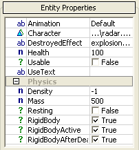
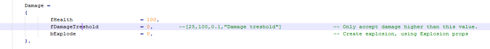

Overview
To implement a new entity using Lua, two files need to be stored in the game folder.
The first one is the Ent file which is parsed by the Entity System to know the file location of the Lua script. The second one is the Lua script which implements the desired properties and functions.
With the SDK, both the .ent and .lua files are stored inside the <Game_Folder>\Scripts.pak file.
Ent File
The Ent files are all stored inside the <Game_Folder>\Entities directory and need to have the .ent file extension. The content is an XML file like the example below.
<Entity
Name="RadarBase"
Script="Scripts/Entities/Others/RadarBase.lua"
/>
The following table outlines the properties parsed by the Entity System.
Property | Description |
|---|---|
Name | Name of the Entity class. |
Script | Path of the Lua script used to implement the entity class. |
Invisible | Prevents it from being visible as one of the available entity classes inside Sandbox. |
Lua Script
The Lua script consist of one main table which should have the same name as the name intended for the entity class.
Properties Table
The Properties table needs to be placed inside the entity class table. It will be parsed by the Sandbox Editor and provides level editor a way to change entity class parameters through the user interface.

In order to have the parameters listed in the table above, the following Properties table.
Properties =
{
object_Character = "objects/library/architecture/airfield/radar/radar.cga",
sAnimation = "Default",
sDestroyedEffect = "explosions.C4_explosion.ship_door",
fHealth = 100,
Physics =
{
bRigidBody=1,
bRigidBodyActive = 1,
bRigidBodyAfterDeath =1,
bResting = 0,
Density = -1,
Mass = 500,
},
},
The values assigned inside the Lua table are used to provide default values in Sandbox. The property values for each instance placed on a level will be saved individually in the level file.
Sandbox provide the Archetype tool for assigning a common set properties reused for multiple instance (even across multiple levels). More information on Archetypes can be found in the Sandbox Manual.
Any time a property of an instance is changed within Sandbox, the OnPropertyChange() function will be called if it is has been implemented for the Script Entity.
It is possible to give the Editor hints, concerning the value type desired for a property value. This is done by using one of the following prefixes on the value name.
Prefix | Type |
|---|---|
b | boolean. |
f | float. |
i | integer. |
s | string. |
clr | color. |
object_ | an object compatible with CryENGINE: a CFG, CGA, CHR or CDF file. |
Editor Table
The Editor table can be added inside the entity class table. It gives some information to Sandbox on additional information to draw on the instances of an entity.
Value item | Description |
|---|---|
Model | CGF model which the Editor render over any instance of the entity. |
ShowBounds | Indicates if the Editor draw the bounding box of the entity when it is selected. |
AbsoluteRadius | |
Icon | BMP icon drawn over the entity. |
IconOnTop | When true, the icon will be drawn on top of the entity, otherwise the icon will be drawn just under it. |
DisplayArrow | |
Links |
Special Comments
You can add special comments behind a variable which can be utilized by the engine. Currently you can change the default sliders inside the editor by providing information about a number variable.
For example: 
The comment...
--[25,100,0.1,"Damage treshold"]... tells the engine that:
- The value is limited to values between 25 and 100.
- In case of a decimal it will us a step of 0.01, this defines the fidelity of which the value can be changed in the editor.
- "Damage treshold" will be added to the tooltip which pops up when you hover over a variable to provide additional information.
Functions
The Script Entity can include several callback functions called by the engine or game system. Look at the Callback References for more information.